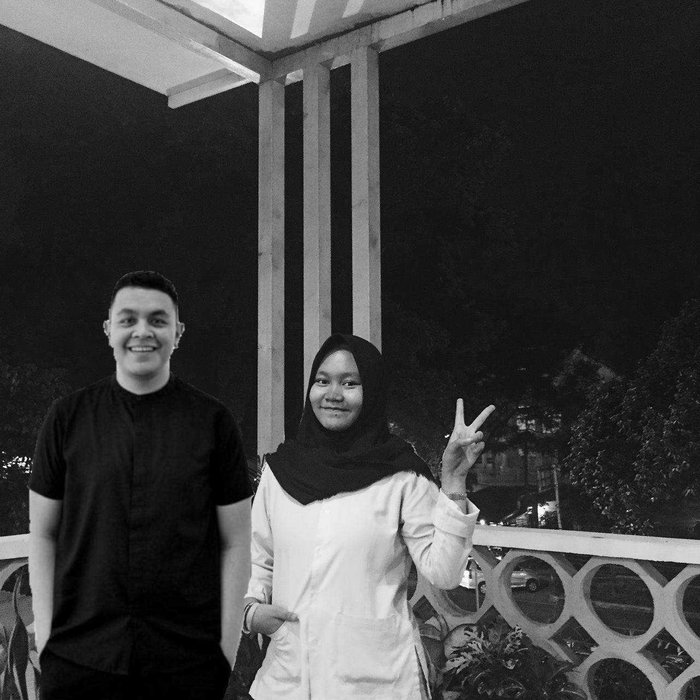

Hello Everyone!
So, This is Me
My name is naomi labibah, and you can call me naomi. I study in bogor vocational highschool of chemical analyst. Now im grade 11 and i am a part of pragnacio neutrina (63th) generation. I was born in Bogor, on February 26th, 2002 and it is close enough untill i'm turning 17. As where i was born, i live in Bogor.

About My Family
I am the second child of 2 siblings. I have one sister that older 3 years than me. My father is from Bali and my mother is from Bogor. I cant tell if i'm Balinese and Sundanese because i cant even talk in Balinese....
My Hobbies
My hobby is singing. Even though my voice does not that good, but honestly, i like to sing (usually in my own room). My favorite singer is Tulus and Kunto Aji, they have a really good voice and their songs are very calming. And I like to hangout with my friends too.

My dream is to be able to travel around the world